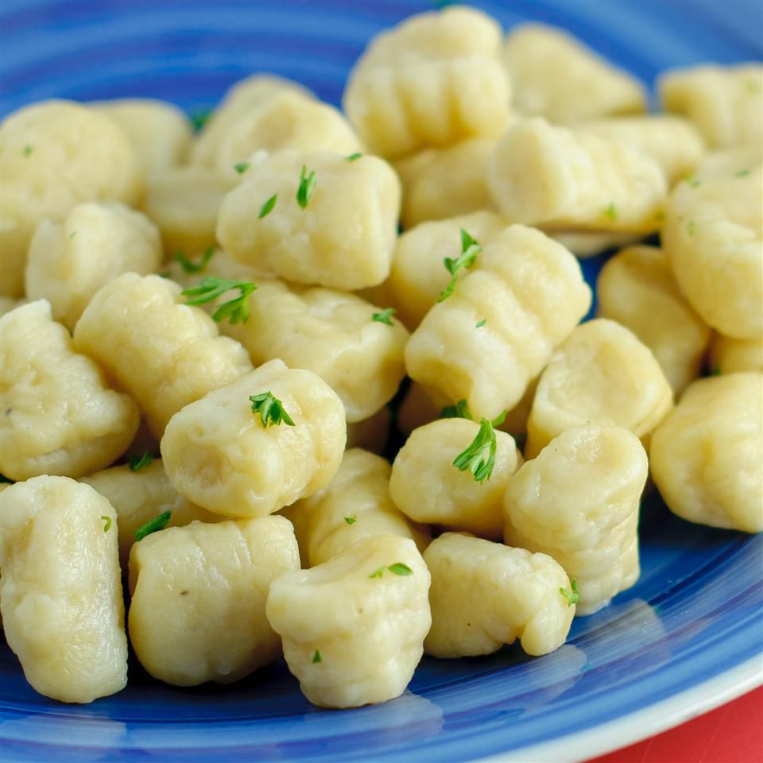

Homemade Gnocci

Suprisingly easy and tasty pasta recipie that can be made within an hour
Ingredients
- Russet Potatoes
- Flour
- Salt
- Water
- Eggs
Steps
- Peel then boil potatoes for at least 1hr -- then mash.
- Add egg(s) and flour to food processor and knead.
- Coat work surface with flour and work till less sticky.
- Divide into ropes, cut into bite-sized pillows, press with fork.
- Boil pieces untill they float.